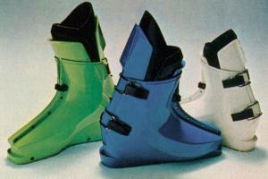
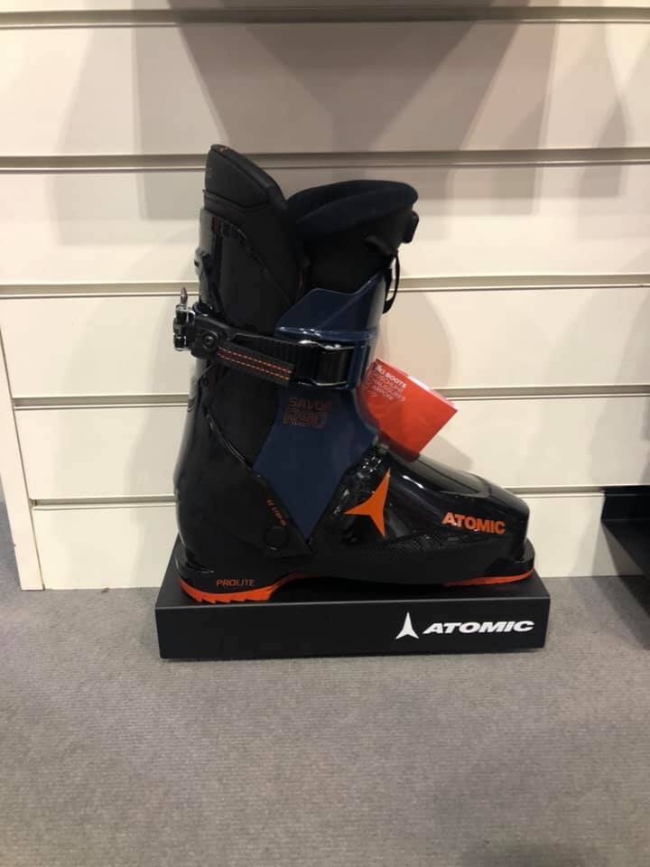
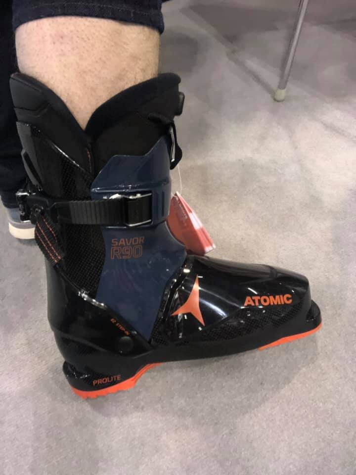

Legendarische SX 91 EquipeDe opkomst, val en herrijzenis van een legendarische skischoen.

Met enige regelmaat wordt er door klanten naar gevraagd. Meestal met enige weemoed in de stem: de skischoen met achterinstap! 'Waarom is ie verdwenen?" Hij was super comfortabel.' en 'nooit meer zoiets geskied'.
Het is een misvatting dat de achterinstap skischoen (met name de Salomon SX serie) alleen voor beginners was. Wat is er toch gebeurd met deze achterinstappers die ooit goed waren voor 80% van de skischoenverkoop wereldwijd. En komt hij misschien terug? Een reconstructie.
Hanson achterinstap skischoen
In tegenstelling tot wat velen denken is niet Salomon maar het Amerikaanse Hanson de uitvinder van de achterinstapper. De broers Chris en Denny Hanson werkten indertijd bij Lange (toen nog een Amerikaans bedrijf van Bob Lange) Één van de grootste problemen was in die tijd een comfortabele 

De achterinstapper in Europa
In 1979 was het Franse Salomon een skibindingfabriek met voornamelijk een zeer technische staf en dito directeur. De legendarische Georges Salomon, oprichter van deze fabriek, zag wel een toekomst in een comfortabele achterinstap skischoen. De achterinstapper werd verbeterd en uitgerust met een ingenieus kabelsysteem om de schoen te kunnen fixeren. Ook werd er een mogelijkheid gemaakt om de schoen een variabele flex mee te geven. De schoen werd een enorm succes en zette Salomon direct op de kaart als skischoenfabrikant.
De Salomon SX91, een legendarische skischoen
Volgens ingewijden was de Salomon SX91 de beste achterinstapper ooit gemaakt. En in tegenstelling tot wat velen tegenwoordig beweren was het ook een hele goede skischoen. Marc Giradelli won er worldcup wedstrijden mee en Franz Weber speedski records. Maar vooral recreatieve skiërs hadden er een goede, comfortabele skischoen aan.
In de hoogtij dagen, zo rond 1988, was 80% van de skischoenmarkt een achterinstapper en 2 van de 3 verkochte achterinstap skischoenen was een Salomon.
Maar wat is er gebeurd met deze publiekslieveling en legendarische skischoen?
De dodelijke kracht van PR
Alle gerenommeerde skischoenfabrikanten in die tijd zagen met lede ogen hun omzet slinken en de meesten probeerde een graantje mee te pikken van de steeds populairder wordende achterinstap skischoen. Behalve Nordica (met de legendarische ontwerper Sven Coomer) lukte het geen andere fabrikant een fatsoenlijke achterinstapper te maken. Een frustratie was geboren…
Als technisch georiënteerde skibindingfabriek had Salomon eind jaren tachtig nog niet heel veel credibility in de skiwereld. En dat is waar de andere skischoenfabrikanten hun kans schoon zagen.
De achterinstap skischoen werd gepositioneerd als zijnde voor beginners en slechte skiërs. Verkopers in skishops werd wereldwijd verteld dat de achterinstapper geen performance bood en dat ze waardeloos skiede.
Zo kon het gebeuren dat in 5 jaar tijd de Salomon SX van best verkopende skischoen degradeerde naar de schappen van de verhuurafdeling. Van dat imago is de achterinstapper nooit afgekomen. Nu nog steeds beweren mensen, die de schoen nooit hebben geskied, dat ze waardeloos waren.
Comeback van de achterinstap skischoen.
Op internet zijn er petities en acties gevoerd voor de terugkeer van de achterinstap skischoen. Men ziet met name voor de groeiende groep senioren allerlei voordelen. Maar ook voor de recreatieve skiër. Er is zelfs al door enthousiastelingen een modern ontwerp gemaakt van de Salomon SX.

Modern ontwerp gemaakt van de Salomon SX
En er is nieuws: in seizoen 2019/2020 is er een grote skischoenfabrikant die weer een achterinstapper op de markt gaat brengen. De Atomic Saver!
De achterinstapper is dood, lang leve de achterinstapper!
Beloofd is beloofd: de achterinstapper is terug: Dit is 'm de Atomic Savor R90

